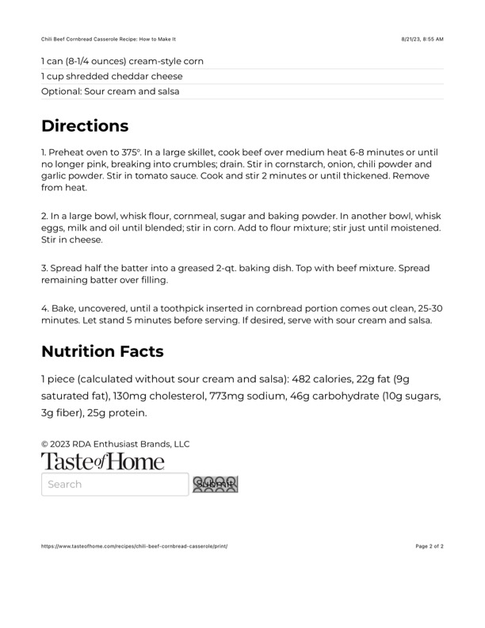

Chili Beef Cornbread Casserole Recipe: How to Make It

Original cookbook page 496
Ingredients
- 1 can (8-1/4 ounces) cream-style corn
- 1 cup shredded cheddar cheese
- 1 piece (calculated without sour cream and salsa): 482 calories,
Instructions
- Preheat oven to 375°. In a large skillet, cook beef over medium heat no longer pink, breaking into crumbles; drain. Stir in cornstarch, onion garlic powder. Stir in tomato sauce. Cook and stir 2 minutes or until th from heat.
- In a large bowl, whisk flour, cornmeal, sugar and baking powder. In eggs, milk and oil until blended; stir in corn. Add to flour mixture; stir ji Stir in cheese.
- Spread half the batter into a greased 2-qt. baking dish. Top with bee remaining batter over filling.
Recipe #496 from collection